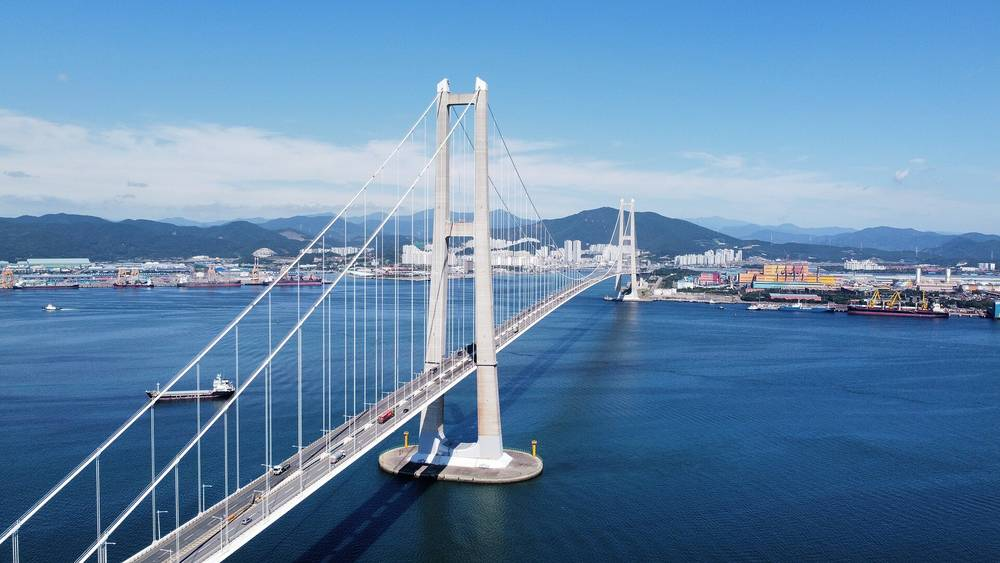

법제연구원 "1,000조 원 K-GX, 기업 탈탄소 뒷받침할 법이 없다"…탄소중립산업법 제정 제언

현행 탄소중립기본법엔 재정·세제·금융 지원 근거 부족…EU 2024년 NZIA, 일본 2023년 GX추진법과 비교
정부가 1,000조 원 규모의 한국형 녹색대전환(K-GX) 전략을 내놨지만, 기업의 탈탄소 전환을 실제로 받쳐 줄 법적 장치는 아직 모자란다는 국책 연구기관의 진단이 나왔다. 한국법제연구원은 15일 낸 '탄소중립산업법의 제정 필요성과 제언' 보고서에서 현행 탄소중립기본법이 녹색산업 육성과 기술개발을 넓게 규정할 뿐, 설비 전환에 필요한 재정·세제·금융 지원의 구체적 근거는 부족하다고 분석했다. 개별 산업 지원법도 완제품 중심이어서 소재·부품·장비 같은 전후방 산업이 빠지는 경우가 많고, 투자비가 크고 회수 기간이 긴 탈탄소 투자에는 지원 조건과 기간을 미리 알 수 있는 제도가 필요하다는 것이다. 보고서는 유럽연합이 2024년 탄소중립산업법(NZIA)을, 일본이 2023년 GX추진법을 만들어 10년간 약 20조 엔의 선행투자 구상과 전환채권 발행 근거를 법에 담은 사례를 들었다. 국회에는 3월 25일 박지혜 더불어민주당 의원 등 28명이 낸 관련 특별조치법안이 있으며, 장은혜 연구위원은 기술개발부터 시장 진입까지 지원을 잇고 부처 간 역할을 분명히 해 입법을 서둘러야 한다고 제언했다.
시민에너지 관점
일본은 GX추진법으로 10년간 약 20조 엔을 미리 쓰겠다고 법에 못 박았지만, 그 돈이 대기업 설비에만 몰리면 지역은 송전선과 발전소의 부담만 떠안게 된다. 산업 전환에 들어갈 전기를 누가 만들고 그 이익을 누가 가지느냐가 빠진 지원법은 반쪽짜리다. 새 법이 기업의 장기 투자위험을 나눠 지겠다면, 같은 원칙으로 주민·협동조합이 산업단지 지붕과 인근 부지에 짓는 재생에너지에도 장기 저리 금융과 우선 구매 근거를 줘야 한다. 국회는 탄소중립산업법 심사에서 시민 참여형 발전사업 지원을 별도 조항으로 넣어야 한다.
출처: 아주경제 2026-11-15 김소희 원문 보기
法制研究院「1,000兆ウォンのK-GX、企業の脱炭素を支える法がない」…炭素中立産業法の制定を提言
現行の炭素中立基本法には財政・税制・金融支援の根拠が不足…EUの2024年NZIA、日本の2023年GX推進法と比較
政府が1,000兆ウォン規模の韓国型グリーン大転換（K-GX）戦略を打ち出したが、企業の脱炭素転換を実際に支える法的仕組みはまだ足りないとの国策研究機関の診断が出た。韓国法制研究院は15日に公表した報告書「炭素中立産業法の制定の必要性と提言」で、現行の炭素中立基本法はグリーン産業の育成や技術開発を幅広く定めるだけで、設備転換に必要な財政・税制・金融支援の具体的な根拠は乏しいと分析した。個別の産業支援法も完成品が中心で、素材・部品・装備などの前後方産業が外れることが多く、投資額が大きく回収期間の長い脱炭素投資には、支援の条件と期間をあらかじめ見通せる制度が必要だという。報告書は、EUが2024年にネットゼロ産業法（NZIA）を、日本が2023年にGX推進法を制定し、10年間で約20兆円の先行投資構想と移行債発行の根拠を法律に盛り込んだ例を挙げた。国会には3月25日に共に民主党のパク・チヘ議員ら28人が提出した関連特別措置法案があり、チャン・ウンへ研究委員は、技術開発から市場参入まで支援をつなぎ、省庁間の役割を明確にして立法を急ぐべきだと提言した。
市民エネルギーの視点
日本はGX推進法で10年間に約20兆円を先行して投じることを法律に明記したが、その資金が大企業の設備にばかり集まれば、地域は送電線や発電所の負担だけを背負うことになる。産業転換に使う電気を誰がつくり、その利益を誰が持つのかが抜け落ちた支援法は半分にすぎない。新しい法律が企業の長期投資リスクを分担するというなら、同じ原則で、住民や協同組合が産業団地の屋根や周辺用地に建てる再エネにも長期・低利の融資と優先購入の根拠を与えるべきだ。国会は炭素中立産業法の審査で、市民参加型発電事業への支援を別の条項として盛り込むべきだ。
出典: 아주경제 2026-11-15 김소희 原文を読む
韩国法制研究院：“1,000万亿韩元K-GX缺少支撑企业脱碳的法律”…建议制定碳中和产业法
现行碳中和基本法缺乏财政、税收和金融支持依据…对比欧盟2024年《净零工业法案》与日本2023年《GX推进法》
政府虽已推出规模达1,000万亿韩元的韩国型绿色大转型（K-GX）战略，但国策研究机构指出，真正支撑企业脱碳转型的法律机制仍然不足。韩国法制研究院15日发布《碳中和产业法的立法必要性与建议》报告，分析认为现行《碳中和基本法》只是宽泛地规定了培育绿色产业和技术开发，对设备转型所需的财政、税收和金融支持缺乏具体依据。各产业支援法也以终端产品为中心，材料、零部件、装备等上下游产业往往被排除在外；而脱碳投资金额大、回收期长，需要能事先预见支援条件和期限的制度。报告举例说，欧盟于2024年制定《净零工业法案》（NZIA），日本于2023年制定《GX推进法》，在法律中写入10年约20万亿日元的先行投资构想和转型债券发行依据。国会目前有共同民主党议员朴智惠等28人于3月25日提出的相关特别措施法案，研究委员张恩惠建议，应把从技术开发到进入市场的支援衔接起来，明确各部门职责，加快立法。
市民能源视角
日本通过《GX推进法》把10年约20万亿日元的先行投入写进了法律，但如果资金只流向大企业的设备，地方就只能承担输电线和电厂带来的负担。不回答“产业转型所需的电由谁来生产、收益归谁”的支援法只是半部法律。新法既然要分担企业的长期投资风险，就应以同样原则，为居民和合作社在产业园区屋顶及周边用地建设的可再生能源提供长期低息融资和优先购电依据。国会在审议碳中和产业法时，应把支持市民参与型发电项目作为单独条款写入。
来源: 아주경제 2026-11-15 김소희 查看原文
Legal research institute says Korea's ₩1,000 trillion K-GX plan lacks a law to back corporate decarbonization
Current Carbon Neutrality Act offers no clear basis for fiscal, tax and financial support, report says, pointing to the EU's 2024 NZIA and Japan's 2023 GX Promotion Act
The government has unveiled a Korean Green Transformation (K-GX) strategy worth 1,000 trillion won, but a state research institute says the legal tools to actually support companies' decarbonization are still missing. In a report released on the 15th on the need for a net-zero industry act, the Korea Legislation Research Institute found that the current Carbon Neutrality Act only broadly provides for fostering green industries and technology, with no concrete basis for the fiscal, tax and financial support needed to replace equipment. Sector-specific support laws focus on finished products and often leave out materials, parts and equipment suppliers, while decarbonization investments are large and slow to pay back, so companies need predictable terms and timeframes for support. The report cited the EU's Net-Zero Industry Act of 2024 and Japan's GX Promotion Act of 2023, which wrote into law about 20 trillion yen of up-front investment over 10 years and the basis for issuing transition bonds. A related special bill filed on March 25 by Rep. Park Ji-hye of the Democratic Party and 27 others is pending, and research fellow Jang Eun-hye urged lawmakers to link support from R&D to market entry, clarify ministries' roles and pass the law quickly.
Citizen Energy View
Japan's GX Promotion Act commits about 20 trillion yen in advance over 10 years, but if that money flows only into big companies' plants, local communities are left carrying only the burden of power lines and generators. A support law that ignores who will produce the power for industrial transition, and who will keep the profits, is only half a law. If the new act is to share companies' long-term investment risk, the same principle should give residents and cooperatives building renewables on industrial-park roofs and nearby land access to long-term low-interest finance and priority purchase. The National Assembly should add a separate clause supporting citizen-led generation when it reviews the net-zero industry bill.
Source: 아주경제 2026-11-15 김소희 Read the original